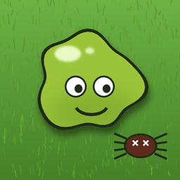

Snot Shot
Pick it. Flick it. Splat the ticks.
How to play
- Circle clockwise to load the right nostril, anticlockwise for the left.
- Every lap adds range. Slide down to flick.
- Too many laps gives you a nosebleed, too fast and it slips, stall and it drips back.
- A new Daily challenge every day: the same ticks for everyone.
Common questions
I bought Remove Ads on another device. Open Settings (⚙️ during play, or Settings on the game-over screen) and tap Restore while signed in with the same Apple ID.
My scores aren't on the leaderboard. Check you're signed in under iOS Settings → Game Center, then finish a run.
No sound. Check the ring/silent switch and the in-game mute button.
Contact
Bugs, feedback or anything else: developer@zerotrustdiaries.co